AngelLoader
A fan mission loader for Thief Gold, Thief II: The Metal Age, Thief: Deadly Shadows, System Shock 2, and The Dark Mod
Official documentation
Table of contents
Getting started
System requirements
- Windows 7 SP1, Windows 8.1, or Windows 10 Anniversary Update or newer
- .NET Framework 4.7.2 or newer (the Windows version requirements are a direct result of this)
Installation
Currently AngelLoader is portable-only, so it must be placed in a non-protected folder (so don't put it inProgram Files or Program Files (x86)).
Some examples of good locations might beC:\AngelLoader, C:\Games\AngelLoader, etc.
Initial setup
When you start AngelLoader for the first time, you'll see the initial setup window:
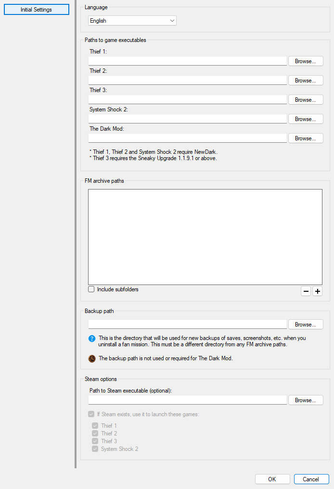
Language
If other languages are available, you can choose them here. Changes will take effect immediately.Paths to game executables
Here you can choose the executable files for the supported games you have installed. These fields are optional - you can set some, all, or none. You will still be able to see and manage all of your fan missions even if you haven't set their corresponding executable, but of course you won't be able to install or play any of them unless their executable is set.Thief 1, Thief 2 and System Shock 2 must be patched with NewDark in order for AngelLoader to be able to use them.
Thief 3 must be patched with the Sneaky Upgrade. Version 1.1.9.1 or above is recommended; while versions as far back as 1.1.3 may work, they haven't been tested and are not officially supported.
For The Dark Mod it is recommended to use version 2.11 or above; older versions have not been tested.
Steam options
If you own one or more supported games on Steam, you can specify the location ofsteam.exe and choose which games should be launched through it. Launching a game in this way enables access to Steam features such as the in-game overlay, play time counter, etc.
Backup path
If you've specified game executables for Thief 1, Thief 2, Thief: Deadly Shadows, or System Shock 2, then this is a required field. This is the directory that will be used for backing up saves, screenshots, etc. when you uninstall a fan mission. This must be a different directory from any FM archive paths. AngelLoader will still be able to use your existing backup files from other loaders, but will place any new backup files in this directory. If you've only specified a Dark Mod game executable, then this path is not used or required.FM archive paths
Here you can set the directory or directories where your fan mission archives (.zip or .7z files) are located. If you enable "Include subfolders", then all subfolders inside all directories you specify will also be searched for FM archives (this matches NewDarkLoader's behavior). Otherwise, only the exact directories you specify will be searched. A note on fan mission archive directories: Because multiple directories are allowed, there is the potential for duplicate files. In this case, AngelLoader will simply use the first file it finds, and ignore any further files with the same name. It is recommended that you don't put duplicate files in your archive directories, but if you do, then as long as they're exact copies (ie., not different files with the same name) then it will be fine. It's also recommended that your archive directories should only contain fan missions and/or FMSel/NewDarkLoader backup files. While AngelLoader does attempt to reject non-mission archives on scan, it's still best to keep unrelated files out of your FM directories.Main window
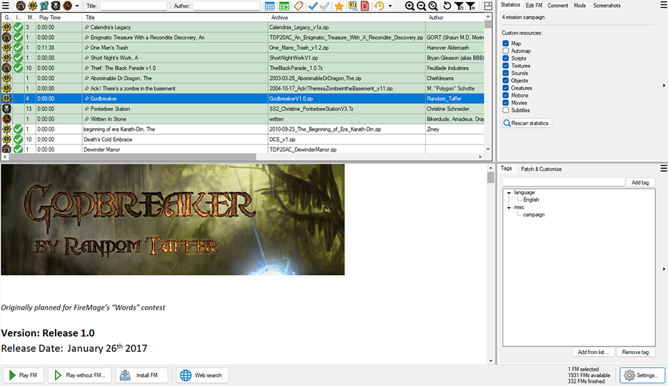
Startup scan
Whenever new FMs are detected, they will be automatically scanned. If you cancel the scan, then they will be scanned when manually selected, similar to DarkLoader. It's recommended that you let the scan finish, especially if you're using game tabs, as it will result in FMs being categorized properly.Main menu
Game versions
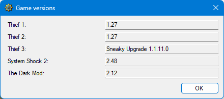
Here you can see which version of each game you have installed. If a game has not been specified in the Paths settings section, it will be grayed out.Import
Clicking this button will bring up a list of other loaders you can import data from. Supported loaders are DarkLoader, NewDarkLoader, and FMSel. If you have a large collection of FM data from one of these loaders (comments, ratings, finished statuses, etc.) then you can import that data into AngelLoader, replacing any current data (so be careful).Scan all FMs
This allows you to scan all the FMs in the list. Clicking it will bring up a window where you can choose what to scan for. Only the fields you select will be scanned for and overwritten; non-selected fields will not be touched. The exception to overwriting is tags: tags will only ever be kept the same or added to, not overwritten.Settings
Opens the Settings window.Filter bar
Here you can choose to filter your FM list by game, title, author, release date, last played date, tags, finished status, and rating. If you've chosen to organize your games by tab, then these tabs will take the place of the game filter buttons.Clicking the drop-down arrow () at the right side of the filter bar will allow you to hide individual filters to minimize clutter. When a filter is hidden, it will be automatically switched off.
Show FMs marked as "unsupported game or non-FM archive"
This allows archives marked as Unknown () (archives that were rejected as not being FMs) to be displayed in the list. If support for new games is added in the future, you can use this to show previously unsupported FMs so you can re-scan them individually if you wish.Show only unavailable FMs
This allows you to see FMs that are in the database, but cannot be found on disk. This is useful when you want to clean old FMs out of the database.Show recently added FMs at the top of the list
This will cause recently added FMs to be highlighted and displayed at the top of the list. This makes it easier to find FMs that you've just downloaded, for example. The number of days to consider an FM "recent" can be changed in the Settings window. The default is 15 days.Refresh FMs list
Reloads the list of FMs from disk. This will always occur on startup, but this button is useful if you've added new FMs since starting AngelLoader.The list can also be refreshed from disk by pressing
Shift-F5 when the mission list is focused.
Refresh filters
When you edit a mission's data, the list of missions is not refreshed. This is to prevent a mission that no longer fits the filter criteria from being filtered out of the list in the middle of being edited. If you've edited an FM and want to re-filter the list, click this button.The list can also be refreshed by pressing
F5 when the mission list is focused.
Clear filters
Clears all filters.Reset layout button
Resets the main window to its default proportions.Draggable splitters
You can drag these horizontally or vertically to resize the sections of the window. If you drag at the corner between the two splitters, you can resize all three main sections at once.Readme area
Here is where the selected FM's readme is displayed. If there are multiple readmes, AngelLoader will attempt to detect one that doesn't contain spoilers (lootlists, walkthroughs, etc.). If it finds one, it will choose that readme automatically. If a non-spoiler readme is unable to be detected with certainty, you will be given a choice of which readme to view. In this case, this list of readmes will be the only thing displayed in the readme section. Once you've selected a readme, you will thereafter have the option to select another from a drop-down list that appears in the upper-right corner (see Readme controls).Readme controls

Readme selection dropdown
If the selected FM contains multiple readme files, this will allow you to choose one to view. If the FM contains only one readme or no readmes, the readme selection dropdown will be hidden.Character encoding
If the readme's text is not being displayed correctly (for example, if there are '?' characters where accented characters should be, or if the text is generally garbled), choosing a different character encoding may fix the issue. Although AngelLoader attempts to detect the correct character encoding on its own, it occasionally guesses wrong, so a manual selection option is provided. Character encoding selections are saved per-readme. Character encoding selection is only available for plain-text readmes. Other formats specify their character encoding information themselves, so neither detection nor selection is needed in that case. If a readme does not support character encoding selection, the icon will be grayed out.Zoom in
Makes the readme text larger.Zoom out
Makes the readme text smaller.Reset zoom
Resets the readme text size to the default. In addition to clicking the zoom buttons, the readme can also be zoomed by pressingCtrl+-, Ctrl++, and Ctrl-0, or by holding Ctrl and scrolling the mouse wheel while the cursor is over the readme area.
Fullscreen
When you click the fullscreen button, the readme area enlarges to take up the entire window. Click the button again to restore it to normal size.Bottom bar
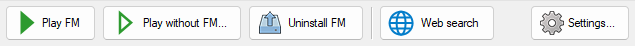
 Play FM
Play FM
Click this button to play the currently selected FM. If the FM is not installed, it will be installed automatically first. If multiple FMs are selected, this button will be disabled.
Play without FM
Click this button to bring up a list of supported games. Only games that you've provided a path to will be enabled. Clicking on one of these games will let you play it without loading an FM.If you have NewDark 1.27 or later and have installed the multiplayer option (meaning Thief2MP.exe exists in your Thief 2 directory), then there will be an additional option in the list to play Thief 2 in multiplayer mode. If you've chosen to display this as multiple buttons instead, then only the buttons for games that you've provided a path to will be displayed. Otherwise it works similarly.
Managing game settings when playing without an FM
For the single-button style, you can manage settings through the Settings submenu upon clicking the button. For the multi-button style, you can manage settings by right-clicking the appropriate game button. Settings include disabled mods and mantling mode. These settings only apply when playing without an FM, and will not have any effect when playing FMs./ Install / Uninstall FM(s)
If the currently selected FM(s) are not installed, this button will install them; otherwise, it will uninstall them. For The Dark Mod, this will become "Select FM" and "Deselect FM". These do the same thing they would in-game. That is, "selecting" an FM causes it to be displayed on the Dark Mod title screen and be ready to play, while "deselecting" removes the FM from the title screen and you must select another one.Web search
Click this button to search the web for the selected FM. You can set the search URL in the Settings window. If multiple FMs are selected, this button will be disabled.Settings
Opens the Settings window.Mission list
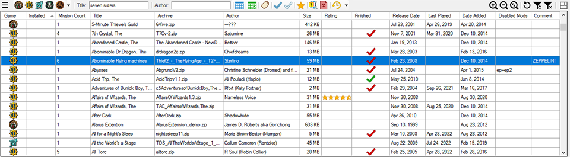
This is the main area where fan missions are displayed, sorted, and filtered. You can change the columns' size, visibility, and order. Drag a column left or right to change its order. Clicking on a column header will sort by that column. Click once to sort by ascending, and click again to sort by descending. Double-click the size grip to the right of a column to auto-size that column to fit its content.Right-click on any column header or any blank space in the list to bring up the column header context menu.
Right-click on an FM to bring up the FM context menu.
Double-click on a mission or press Enter when a mission is selected to play that mission. By default you will be asked for confirmation in this case; see Play FM on double-click / Enter.
Press the Delete key while one or more FMs are selected to delete them.
You can zoom the FMs list either with the zoom buttons on the top bar, or with Ctrl++,Ctrl+-, and Ctrl+0, or with Ctrl+mousewheel.
Columns
Game
Displays an icon based on which game the mission is for. If unknown, it will be blank. The icons are:
- Thief
- Thief II
- Thief: Deadly Shadows
- System Shock 2
- The Dark Mod
- Unsupported mission or non-mission archive (these only appear when the Show Unsupported filter is enabled).
Installed
Displays a icon if an FM is installed; otherwise remains blank.Mission Count
Displays the number of missions in an FM. If it's a single mission, it will be 1; otherwise it's a campaign and it will be the number of missions in the campaign.Title
Displays an FM's title, taking into account the Move article setting. If no title has been scanned for, or a title otherwise can't be found, this will display the FM's archive name without the extension. If no archive name can be found then it will display the FM's installed folder name.Archive
Displays the FM's archive name with extension.Author
Displays the FM's author if one can be found.Size
Displays the FM's compressed (archived) size if possible. If no archive can be found, then it will display the FM's uncompressed (installed) size.Rating
Displays the FM's rating using the selected style.Finished
Displays an icon representing which difficulty or difficulties you've finished an FM on.
- Normal (Easy for Thief: Deadly Shadows and System Shock 2)
- Hard (Normal for Thief: Deadly Shadows and System Shock 2)
- Expert (Hard for Thief: Deadly Shadows and System Shock 2)
- Extreme (Expert for Thief: Deadly Shadows, Impossible for System Shock 2)
- Unknown
Release Date
Displays the FM's release date in the specified format.Last Played
Displays the FM's last played date in the specified format.Date Added
Displays the date the FM was added to the list.Disabled Mods
Displays the disabled mods, if any, for the FM.Comment
Displays the FM's comment, if any, up to the first 100 characters or the first linebreak, whichever comes first.Column header context menu
Right-clicking on any column header, or any blank space in the main list, will bring up this menu. Here you can choose to hide or show columns, or reset their visibility, width, or positions.FM context menu
Right-click on a fan mission in the list to bring up this menu.Play FM
Plays the currently selected FM. If the FM is not installed, it will be installed automatically first. If multiple FMs are selected, this option will be disabled.Play FM (multiplayer)
This item will only appear if Thief2MP.exe was found in the Thief 2 directory. Clicking it will allow you to play the selected FM in multiplayer mode (requires NewDark 1.27 or later). If the FM is not installed, it will be installed automatically first.Install / Uninstall FM(s)
If the currently selected FM(s) are not installed, this will install them; otherwise, it will uninstall them. For The Dark Mod, this will become "Select FM" and "Deselect FM". These do the same thing they would in-game. That is, "selecting" an FM causes it to be displayed on the Dark Mod title screen and be ready to play, while "deselecting" removes the FM from the title screen and you must select another one.Pin to top / Unpin from top
You can choose to pin FMs to the top of list so that they will always remain there regardless of sorting or filtering. When an FM is pinned, this option will unpin it instead. When multiple FMs are selected, there will be two separate options, Pin and Unpin.Delete FM(s)
This will allow you to delete one or more FMs. See Deleting FMs. If the selected FM(s) are available on disk, then you'll be able to delete them from disk and optionally from the database. If the selected FM(s) are unavailable on disk, then you will only be able to delete them from the database.Open FM in DromEd
This item will only appear if DromEd.exe (or ShockEd.exe for System Shock 2) was found in the game directory. Clicking it will open the currently selected FM in DromEd or ShockEd, installing it first if necessary.This option does not apply to Thief: Deadly Shadows or The Dark Mod.
Open FM folder
Opens the FM's installed folder.Scan FM(s)
This will scan the selected FM(s). If you only want to scan for certain fields, see the Edit FM tab.Convert audio submenu
This menu contains the same audio conversion options as in the Settings window, but they can be run at any time here.This option is only available for installed FMs.
Rating submenu
Here you can rate the selected FM(s). The ratings will appear as they've been set in the Settings window: either 0-10 or 0-5.Finished On submenu
Here you can set which difficulty or difficulties you've finished the selected FM(s) on.Unknown - this is mainly for compatibility with imported FMSel data, which doesn't mark difficulties for its Finished value.
For Thief 1, Thief 2, and The Dark Mod, the other difficulties are Normal, Hard, Expert, and Extreme.
For Thief: Deadly Shadows, they are Easy, Normal, Hard, and Expert.
For System Shock 2, they are Easy, Normal, Hard, and Impossible.
"Extreme" is not an official Thief difficulty, but is provided for compatibility with imported DarkLoader data, or to use as you see fit (to denote Ghost, etc).
Web search
Click this to search the web for the selected mission. You can set the search URL in the Settings window.FM details area
This section allows you to edit the selected FM's data and to view more detailed information about it. The tabs can be dragged to change their order if you wish, and they can also be selectively hidden using the menu button at the top-right. Information can only be displayed for one FM at a time, so when multiple FMs are selected, this section will be disabled.Collapse / expand button
Click this to collapse (hide) the FM details section. Click it again to expand it.Statistics tab
Here you can see general statistics.Edit FM tab
Here you can edit an FM's data. If you want to re-scan for a certain field, click the icon beside the field.Alternate titles button
Sometimes, multiple different titles will be detected during a scan. If the default title doesn't look correct, try clicking this dropdown button to see if another is available. Clicking an alternate title will change the FM's title to the one that you've selected.Release date and Last played
If a date hasn't been scanned for or cannot be detected, its checkbox will be unchecked and no date will be shown.Language selection
Here you can choose to play an FM in a particular language. Only languages the FM supports will be available.Comment tab
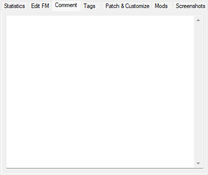
Here you can enter a comment for the FM. This comment will also be displayed in the Comments column (up to the first 100 characters or the first linebreak, whichever comes first), and will update as you type.Tags tab
Here you can manage the FM's tags. You can click the Add from list... button to choose a tag from the global list (which includes standard presets as well as any other tags that have been found for any other FMs), or you can start typing in the textbox to see a real-time list of tags and categories that match what you've typed. If no matching tag or category is found, a new one is created. The format for creating a new tag iscategory: tag. If you don't specify a category when creating a new tag, that tag will be placed in the misc category.
Patch & Customize tab
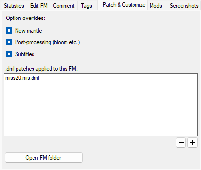
Here you can apply patches and customizations to an FM.Option overrides
If an option override is in the "unset" state, the game will use whatever is set in this FM's fm.cfg or in the global cam_ext.cfg (in other words, the default behavior).New mantle
You can force new mantling on or off per-FM here, or set it back to "unset". If set, it will override the "Use old mantling for OldDark FMs" option for this FM only.Post-processing
Enable or disable post-processing effects per-FM. Currently (as of NewDark 1.27), the only type of post-processing effect is bloom.Subtitles
Enable or disable subtitles per-FM. This only affects standard NewDark subtitles; older FMs that use non-standard custom subtitles will not be affected (eg. Broken Triad)..dml Patches
Some older fan missions don't quite work as they should when played with NewDark. In many cases, patches are available to fix them. If you have any .dml patch files, you can add or remove them from the FM's installed folder here. If you've enabled the "All changed files" backup setting, then these fixes will be backed up and restored the next time you install the FM..dml patching is not supported for Thief: Deadly Shadows or The Dark Mod.
Open FM folder
If you want to manually modify the FM's installed folder, you can open it here.NOTE! FM folders contain a special file,
fmsel.inf, which must not be deleted. This file contains metadata and is, due to its nature, not included in differential backups. While AngelLoader will sometimes be able to regenerate it or work without it, deleting it is asking for trouble. Don't do it.
Mods tab
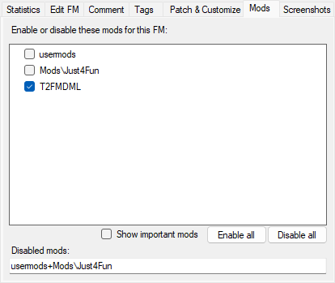
Mods list
Here you can enable or disable mods per-FM. Checked mods will be enabled and unchecked mods will be disabled. The Disabled mods text box will show disabled mods in the single-line format (like in FMSel) and can be edited manually if desired, but it's best to leave it and just use the checkboxes. The mods list displays mods that are specified in the game'scam_mod.ini and whose folders exist on disk. This is to avoid confusion with thinking you have a mod installed when you may not.
Show important mods
There are some mods that are vital to the normal functioning of an up-to-date Thief install, and should not be disabled under normal circumstances. Check this box to display those mods in the list anyway.Enable all / Disable all buttons
The Enable all button will enable all mods, including those marked "important". The Disable all button will disable all mods that are not marked "important".Adding FMs by dragging them onto the main window
In addition to the traditional method of moving new FM archives into one of your archive folders and refreshing the FMs list, you can also add them by dragging the new archive(s) onto AngelLoader's main window. The archive(s) will be copied into your archives folder and the list automatically refreshed. You can then delete the original archive(s) if you wish. If you have multiple archive folders, you will be asked which one you want to copy the dragged archive(s) to.Deleting FMs
Deleting an FM can have different meanings:- Deleting the archive file.
- Deleting the installed folder (uninstalling).
- Deleting the FM's entry from the database.
Settings window
Paths section
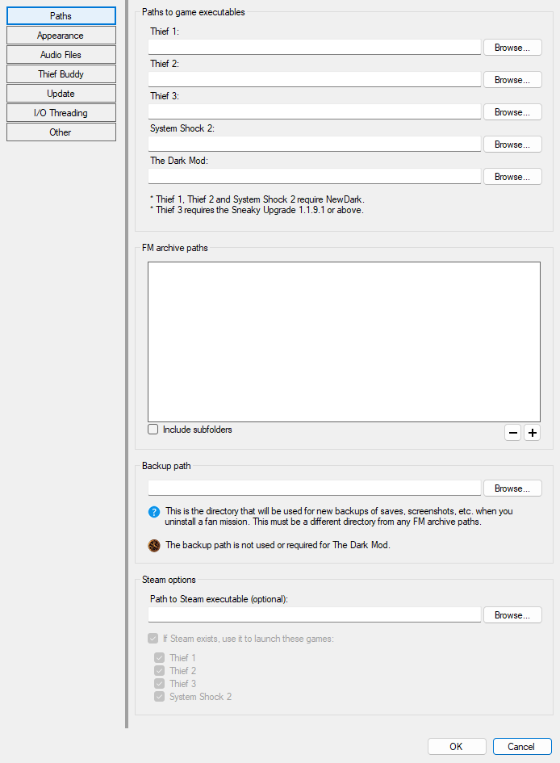
The settings here are the same as the Initial Setup window, except that Language has been moved to the Other section. See Initial Setup for an explanation of these settings.Appearance section
Language
If other languages are available, you can choose them here. Changes will take effect immediately.Theme
Here you can choose either the classic Windows theme or dark mode. Changes will take effect immediately.Game organization
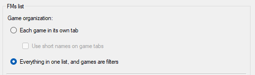
Here you can choose to either organize games into their own tabs, or to display your FMs as one list and allow filtering by game. When game tabs are enabled, each game will have its own selected FM and set of filters that will be retained between tab switches. Organizing games by tab can make things cleaner, but if you want to filter without regard to game (say, to find all missions by a single author who has released missions for multiple games), then having one list with game filters will work better.If you select the Use short names on game tabs checkbox, game tabs will be displayed with abbreviated names to save screen space.
Sorting

Rating display style
Here you can choose the style in which to display an FM's rating (0-10, 0-5, or 0-5 with stars).Date format
Here you can choose how to display dates: either in the short or long form of your PC's current culture, or a custom format.Recent FMs
When choosing to show recently added FMs at the top of the list, only FMs added within the selected number of days will be included.Show or hide interface elements
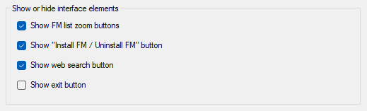
Show "Install / Uninstall FM" button:For extra-strength misclick prevention, uncheck this. You will still be able to install and uninstall FMs from the FM context menu. Show FM list zoom buttons:
Since you can zoom the FMs list with the keyboard or Ctrl+mousewheel, you can hide these buttons to free up room. Show web search button:
This option is also available in the FM context menu, so you can hide the button for tidiness. Show exit button:
Allows you to show or hide an Exit button in the bottom-right corner of the main window, similar to FMSel.
Readme box
Use a fixed-width font when displaying plain text:Some readmes may look better when displayed in a fixed-width font. This option only applies to plain text readme files; other file types will use their own fonts. This behavior matches DarkLoader.
Play without FM
Choose what style to display the "Play without FM" controls in.Other section
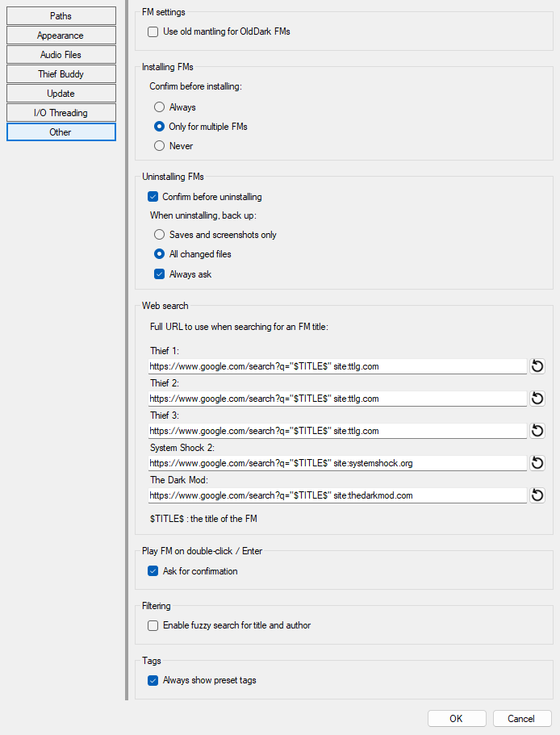
Use old mantling for OldDark FMs
NewDark introduced an improved mantling (ledge climbing) system that greatly increases reliability, but also allows mantling in many places that were not originally possible or intended in OldDark. Enabling this option will allow you to play OldDark missions "as intended" with regards to mantling. You can override this option per-FM in the Patch & Customize tab.Convert .wavs to 16 bit on install
Depending on your setup, .wav files that are higher than 16 bit may cause audio problems when played by Dark Engine games, such as intermittent or constant static noise. Converting all .wav files to 16 bit will solve this issue, and does not result in a perceptible loss of fidelity. Therefore, this option is turned on by default.This option has no effect for Thief: Deadly Shadows or The Dark Mod.
Convert .oggs to .wavs on install
Quoted from the FMSel manual:The game can play OGG files but it can under some circumstance cause short hiccups, on less powerful computers, performance heavy missions or with large OGG files. In such cases it might help to convert them to WAV files during installation.
This option has no effect for Thief: Deadly Shadows or The Dark Mod.
Installing FMs
Choose whether to be prompted before installing FM(s).Confirm before uninstalling
If this is enabled, you will be prompted for confirmation when uninstalling FM(s).Back up data when uninstalling
When an FM is uninstalled, you will normally want to back up its saves and screenshots so they can be restored if you install it again. You can also choose to back up all changed files, in which case the backup will also include all files in the installed folder that have been added, removed, or modified as compared to the files in the archive. This is useful if you have added .dml patches to the FM, or made other modifications such as creating or modifying an fm.cfg file, fixing readables, etc. Because AngelLoader aims to be patch-friendly, this option is the default. You can also choose to always be asked if you want to back up data when uninstalling an FM.Web search
Here you can edit the URLs that will be used when searching for FMs on the web. The string$TITLE$ can be placed anywhere in a URL to insert the fan mission's title into the final string. For instance, if the URL was
https://www.google.com/search?q="$TITLE$" site:ttlg.com
and the currently selected FM's title was "Broken Triad", then the final URL actually passed to your web browser would be:
https://www.google.com/search?q="Broken Triad" site:ttlg.com
Play on double-click / Enter
When you double-click on an FM in the list or press Enter when the list is focused, the selected FM will be played. Check this box to enable asking for confirmation in that case, to prevent accidental playing from a stray click or key press.Enable fuzzy search for title and author
When this option is enabled, the title and author filters will match approximately. For example, "kinstory" would match "King's Story". When this option is disabled, the filters will match exact text only.Thief Buddy section
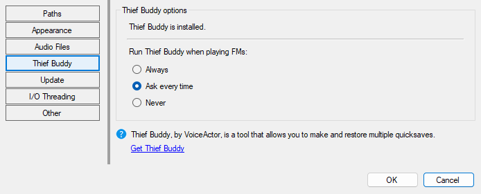
Thief Buddy is a quicksave backup tool created by VoiceActor. If it's installed, you can set these options. This section will refresh immediately upon installing Thief Buddy so you don't have to close and reopen it. You can get Thief Buddy here.Appendix
Localization
AngelLoader supports the localization of its user interface. New languages may be defined in language files, which must be placed in theData\Languages folder. An English.ini file is included in that folder as an example, and other language files are available for separate download. Language files use a simple ini format, and must be saved with UTF8 encoding in order to guarantee correct display of text.
Most user interface elements will be automatically resized to accommodate translated strings, but a few will not (for example, some of the buttons in the tags filter window). It's up to the translator to ensure everything looks correct.
Supported formats
Archive files
Zip (.zip) and 7-Zip (.7z) files are supported.Audio files
MP3 (.mp3), Ogg Vorbis (.ogg), and Wave (.wav) files are supported in fan missions. MP3 files will be automatically converted to WAV files on install, as NewDark does not support playing them directly.Readme files
Plain text (.txt), Rich text (.rtf), HTML (.htm, .html), and GarrettLoader Markup Language (.glml) files are supported. HTML files can be a great deal fancier than any of the other formats, but they must be viewed in a web browser (AngelLoader does not support viewing them in-app, although it provides a button to launch them in the user's web browser).Thanks and credits
I'd like to thank the following people, in no particular order:Dahenjo for helping me hunt down some bugs and suggesting features.
Xanfre for contributing some excellent improvements to the RichTextBox behavior.
EnYB0La for providing the impetus to start writing what became FMScanner, AngelLoader's scanner module. Without it, I never would have attempted to create a standalone NewDark-supporting loader!
Björn Henke and Telliamed for creating DarkLoader, the de facto standard Thief loader for many years, and the original inspiration for AngelLoader's UI and standalone nature.
R Soul for creating NewDarkLoader, a modern loader with the classic DarkLoader UI, and also a source of inspiration for several aspects of AngelLoader.
potterr for creating GarrettLoader, the first loader (as far as I know) to support all three Thief games, the first loader I ever used, and the source of the GLML file format.
Le Corbeau, the mysterious group behind NewDark as well as FMSel, the official NewDark fan mission loader.
All of the above programs were of tremendous help in developing AngelLoader, so thank you all!
I'd also like to thank Looking Glass Studios for creating Thief, the TTLG community for keeping it alive, and my viewers for watching me goof around on YouTube for all those years.
AngelLoader is open-source under the MIT license. You can view the source at AngelLoader's GitHub repository.